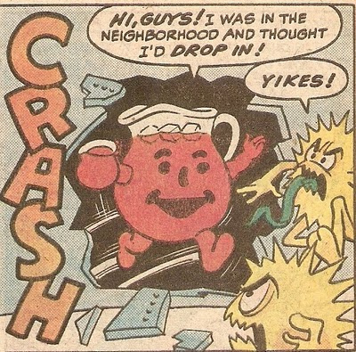

A Devil's Advocate Drinks the Kool-Aid
I love a good restaurant.
I also love to cook, and make a mess in the kitchen.
But let's be real.
Shereef is right. DBC is not a restaurant.
But neither is DBC an open kitchen.
DBC is an exclusive and expensive culinary academy.
Which is not to say that I disagree with anything Shereef said in his welcome video.
I agree that to get the most out of culinary school, you've got to do your homework. You've got to be ready to produce many collapsed soufflees before you find your signature recipe. You've got to WANT TO COOK, and be engaged with your peers as you stumble towards competence.
DBC is providing a service that we as a cohort are consuming.
It's a for profit entity. (It is also clearly invested in our success, and doesn't take the process lightly.)
I wouldn't be here if I didn't think this was the best place for me to be. I'm ready to roll up my sleeves, admit my immense ignorance, and start slowly building a tool kit.
But We're All In This Together strikes me as a little shallow when it comes with a $12k price tag.
Don't get me wrong.
I am ready to work VEEEERRRRRYYY hard to become a world class beginner.
I expect no free lunch (sic).
And so far I've been really impressed with how the information is structured, how we're being pushed, and the arc of the preparation.
But DBC had better have its ducks in a row when I walk in the door. The instructors better have a really good idea of what the program is, what the curriculum is, and they had better have very strong ideas about their roles as instructors at DBC.
I don't expect anybody at DBC to slice me a hunk of knowledge-pie that I eat and suddenly become an employable genius.
But this is clearly an exchange.
I expect that for amount of money this costs, and the kind of personal investment I am making of time, energy, attention -
DBC must devote the resources to crafting a strong and well considered course of study for us all to participate in.
Frankly, so far I'm pretty impressed. The rest of my life is pretty much on hold while I build my tool kit with all of you.
I'm gonna bring my A game, and I hope DBC continues to as well.